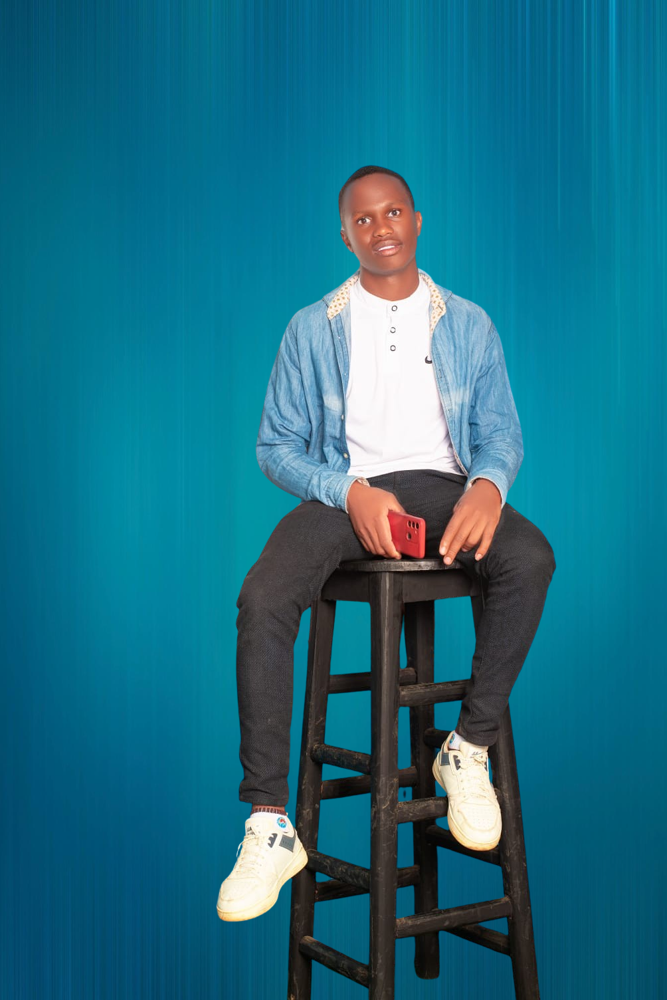

Meet Our Team

Evans Kirimi
Founder & Lead Agronomist
Passionate about sustainable farming, Evans educates farmers on organic methods and soil management.

Jane Doe
Sustainability Expert
Specializes in water conservation strategies and renewable farming solutions.

John Smith
Agricultural Technologist
Integrates modern technology into farming, from smart irrigation to eco-friendly pest control.